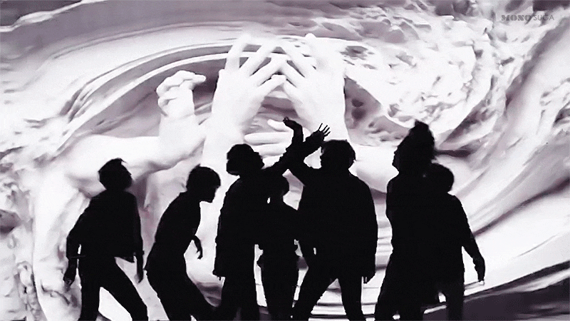
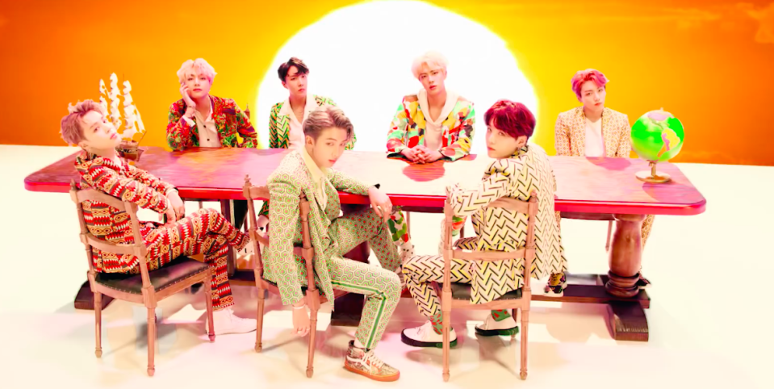
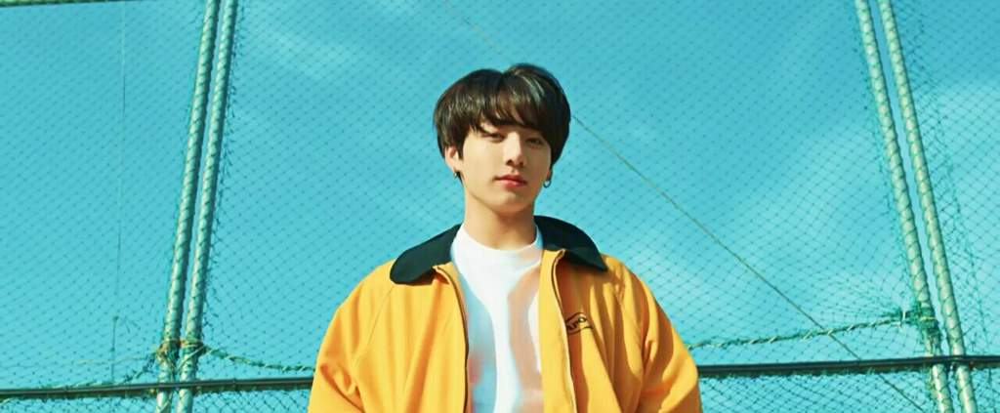

At this point, it'd be strange if you hadn't heard of the Korean pop/hip-hop group BTS (rappers Suga, RM, J-hope and vocalists V, Jimin, Jin and Jungkook).
They dominate the internet, thanks to their savvy following known as ARMY, but their power within the west is tangible, and has been since quietly selling out US arenas in 2016. In 2018, they are a steamroller - 'Love Yourself: Tear' landed at #1 on the US album chart in May, and the 30+ dates of their upcoming world tour, including two nights at London's 02, sold out in minutes.

With the now completed 'Love Yourself' trilogy ('Her', 'Tear' and newly-released 'Answer') being the board on which BTS have surfed to unprecedented success, we look back at the series' most memorable moments and their path to pop domination.
Firstly, it's worth a flashback to their early years (2013/14), during which BTS struggled to rise through K-Pop's ranks. From the outset, however, their songs started conversations for their forthright take on youth and ambition. They also made vast amounts of behind the scenes YouTube content in which they were unpretentious, gregarious, and vulnerable. Without this authenticity, the visual coming of age tale supplementing 2015's two 'The Most Beautiful Moment in Life' albums - on which they also modernised their look, and their sound by adding trappy synths to the R&B/hip hop vibe - would've felt hollow and contrived.
It was this combined sound and story (whereby each member adopted a dark fictional past) that set them apart, eventually releasing BTS from K-Pop's boundaries to fully realise their new direction. That story - whose protagonist is the time-travelling Jin, who attempts to change their beleaguered fates - then expanded through 2016's 'WINGS' album and 'Love Yourself', creating a winding journey of self-discovery inspired by literature (Hesse, Le Guin, Orwell, Doty, Murakami), Renaissance art, and philosophy (Nietzsche, Jung).
'Her', said Suga upon its release in September, 2017, "has many songs that express the moment you fall in love." Love, however, has many faces. 'Pied Piper', a sparkling nod to Daft Punk, is obsessional love, where they admonish fans for neglecting their study/work while relishing being the culprit ("I'm here to save you, I'm here to ruin you").

"That smile is more than cruel...
I want to fall and die in them, I want to drown in them, to me you are a lake"
On the candy-sweet 'dimple', Jungkook sings,, his words teetering between adoration and madness. This intriguing ambiguity also touches the album's opener, Jimin's beguiling but beseeching 'Intro: Serendipity'. Soft with acoustic guitar and drifting synths, its exposition of love bestowed by fate also forms the premise of the lead single, the idiosyncratic earworm, 'DNA'.


Their upward trajectory was hastened by solid radio play for the second single - 'Her's sonic outlier, the scorching, hater-baiting 'MIC Drop', remixed by Steve Aoki - but 'DNA' struck a chord. It currently stands as their most watched single with over 470 million views, and was also their first US TV performance, at the AMA's in November 2017. Beamed to 9.15 million US viewers, the slick performance generated a million Google searches of their name, disputing widely-held views that a foreign language song couldn't connect with an English-speaking audience.
Click the image to watch 'BTS 'FAKE LOVE' Official MV'
In May 2018, the black cover of 'Love Yourself: Tear' indicated a bleak turn to the narrative. 'LY: Her' had closed with the vintage BTS-sounding 'Outro: Her', the rappers reflecting on self-doubt and transparency in relationships, which then connected to 'LY: Tear's lead single and brittle pinnacle of deception, 'FAKE LOVE'.
Meanwhile the lake mentioned on 'dimple' emerged in the album's gorgeously velvety but anguished pre-release track, V's neo-soul 'Intro: Singularity'. In the BTS universe, everything connects to completely immerse you, from video motifs (such as windows, masks, flowers, the colour yellow) to the photobooks in the albums, to the lyrics and choreography.
LY: Tear' adheres to the BTS blueprint, whereby the thematic intersperses with the personal and observational. But musically it's far more coherent than its predecessor, and their most mature, which lends the requisite weight for the self-loathing and deceit that punctures 'LY:Tear' like thorns, painted best by the exquisite, piano-lead 'The Truth Untold'.
A playful flute and the breathy ad-libs of '134340' are a clever cloak for the bitter loss within its lyrics, and on 'Love Maze' and the punchy EDM of 'So What', they acknowledge the struggle to find answers in life. The ARMY had grown exponentially between these releases. On home turf, both albums sold over 1.7 million units each.

Click the image to watch BTS 'DNA' Official MV
In the US, the wave was surging; 'DNA', 'MIC Drop' and 'FAKE LOVE' went gold, and 'Her' peaked at #7. 'Tear', however, would sell 135,000 copies (with 100k being pure) in its first week, dethroning Post Malone to claim #1 on the US album chart, a first for a Korean artist. On the UK album chart, without a shred of promo or radio, it peaked at #8.

Click the image to watch 'FAKE LOVE' Live Performance @2018 BBMAs - BTS
The first live performance of 'FAKE LOVE', which went Top 10 on the US singles chart, was in full glare of the world's media at 2018's BBMAs; they'd cemented themselves not as a passing interest but a formidable competitor. For with 'Her' the group - jovial, ambitious but nervous - had 'arrived' but faced a still somewhat bemused media and general public. The record-breaking 'Tear' indisputably tossed a molotov cocktail into an industry, and country, that struggled with, and often against, diversity and equality.
BTS torched every preconceived notion of what western audiences desired from a pop group and found praise but were also sneered at and snubbed. On 'Love Yourself: Answer' - a double-album that acts as a compilation and conclusion - what's evident is that BTS have turned a corner, uncaring of passing opinions.
Click the image to watch BTS 'IDOL' Official MV
"You can call me artist, you can call me idol... I don't care, I'm proud of it," RM spits on new single 'IDOL', which fuses trap, EDM and South African house music. In the video their Koreanness is celebrated at every turn - the traditional clothing and dance, the tiger, the moon rabbit, the hanok (Korean house).
It broke Taylor Swift's record to be the most viewed video in 24 hours (56.2 million views), racing to #1 on 66 iTunes charts, and 'Love Yourself: Answer' is widely predicted to be their second US #1 in the same year, putting them on par with Drake, Future, The Beatles and Elvis.
Click the image to watch BTS 'Euphoria : Theme of LOVE YOURSELF Wonder'
Of the 16 tracks on CD 1 (opened by Jungkook's future bass-lead 'Euphoria', its high-note climax like a leap into love's fickle hands), seven are unique to it and the remainder are the most story-driven from previous albums.
Placed in narrative order, from fated love to fake love to self-love, the effect is akin to a single light beam through the darkness, unwavering until absorbed by the closer, 'Answer: Love Myself', which lyrically exceeds although plays the instrumental a little too safe.
The rappers' solos add an extra layer to each story arc; 'Trivia: Just Dance' (J-hope bringing heat to twisty future-house) equates the love of dance to the dream of falling in love, 'Trivia: Love' (RM's signature wordplay over starry strings and piano) revels in new love, and 'Trivia: Seesaw' has Suga, his acerbic bars softened with synth-pop and disco funk for one of the album's highlights, caught by an in-limbo relationship.

Staggered throughout are the Intro's, including the most recent, performed by Jin. His moving, Brit-rock influenced 'Epiphany' is the final piece of the narrative puzzle, visually and lyrically, as he embraces his flaws. "Why did I want to hide myself that's so precious, what was I so afraid of," he asks, "I'm the one I should love in this world".
Conceptually, 'Epiphany' and 'I'm Fine', the muscular drum 'n' bass counterpart to their 2016 trop-house single 'Save Me', sum up 'LY: Answer', where there's no promise of a perfect future. For all BTS' emergence into joy and light, there's no straightforward solution either - "Maybe there really is no answer," muses RM on 'Answer: Love Myself'.
This doesn't lessen BTS' message and the strength listeners take from it. The portrayals of the fears, mistakes and thoughts we inflict on ourselves remain poignantly relatable, what the final album does is to remind us that each person must make their own path, and there's no one size fits all answer to achieving self-acceptance. Their triumph over their own demons is worth revelling in, however.
The trilogy's fictional aspect never prevented BTS continuing to use their music as personal therapy, navigating being young and figuring out who they are as individuals, while under intense public scrutiny. 'LY: Answer' is the satisfying artistic and emotional closing of a chapter, although where BTS turn next for inspiration is already of keen speculation.
For now we leave them firmly at the top, with an album that warrants repeated listens and read-throughs of the, often complex, lyrics, as the group themselves head on tour where they'll undoubtedly continue their unchallenged rewriting of music's history book.

Click the logo to go to the BTS Youtube Channel.